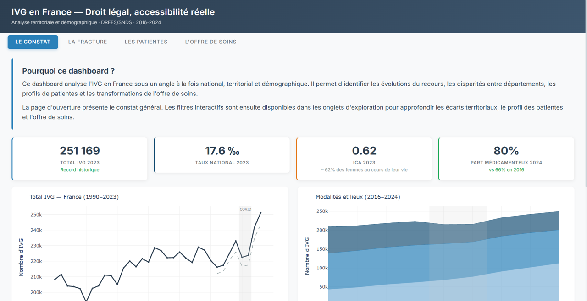
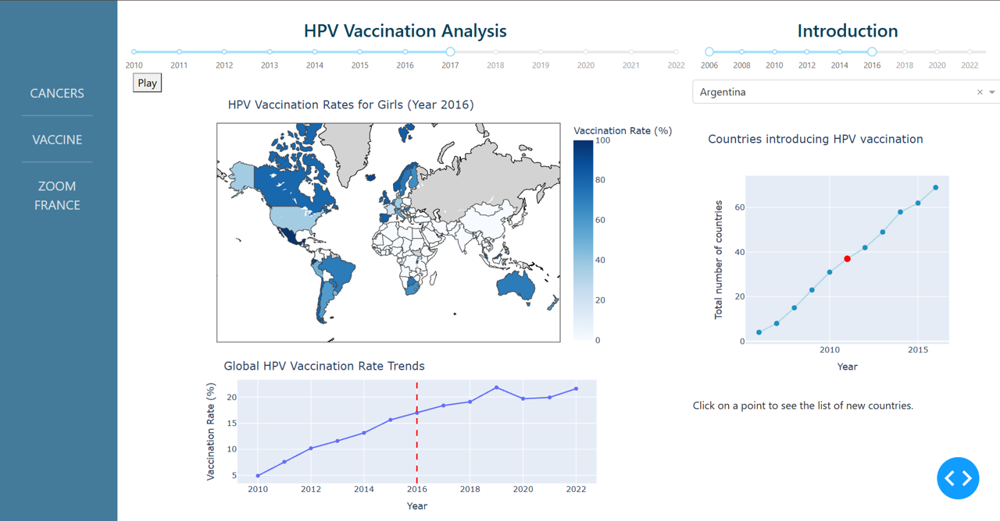
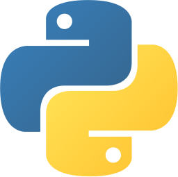
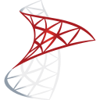
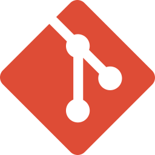

Des données de santé dispersées aux décisions éclairées.
Pharmacien de formation, je me spécialise en science des données de santé, à l'interface du soin et du numérique. Je transforme des données de santé éparses en analyses fiables, sur lesquelles une décision peut s'appuyer.
Ce que j'apporte
Ma valeur ne tient pas à une seule compétence, mais à leur rencontre : la rigueur d'un scientifique, le regard d'un pharmacien, et les outils d'un data scientist.
Hypothèses fixées avant l'analyse, chaque chiffre retraçable jusqu'à sa source, travail reproductible. La fiabilité avant l'effet.
Le cadrage clinique et réglementaire, qu'un généraliste met des années à acquérir : pertinence d'une variable, RGPD, confidentialité des données de santé.
De la collecte au déploiement : Python, R, SQL, scraping d'API, modélisation statistique et mise en production d'outils interactifs.
Projets
Mon rôle est précisé pour chacun. Les tableaux de bord sont hébergés en accès gratuit : comptez quelques secondes de réveil au premier clic.
Recherche clinique · stage M1
Pour le GIRCI Nord-Ouest (CHU de Lille), la première analyse, sur près de dix ans, du devenir de 80 projets de recherche financés. Aucune base ne reliait la décision de financement au devenir réel des projets : je l'ai reconstruite à partir d'archives dispersées, puis modélisé les trajectoires année par année.
Mon rôle : stage individuel. Conception et traçabilité de la base, analyse statistique, restitution.
Livré : une base documentée et scellée, un outil de vigilance à trois ans, une note aux décideurs. Rapport soutenu à l'ILIS en 2026.
Python · analyse de survie en temps discret · validation croisée · ACP

Cliquer pour agrandirTableau de bord interactif · projet d'équipe
Un tableau de bord qui centralise les données ouvertes DREES / SNDS pour éclairer l'écart entre le droit à l'IVG et son accessibilité réelle : tendances depuis 1990, disparités départementales, profils des patientes et offre de soins.
Mon rôle : l'architecture du projet. Collecte des données par scraping d'API, modèle de données, déploiement.
Python · Dash · Plotly · pandas · web scraping · Render

Cliquer pour agrandirTableau de bord interactif · projet d'équipe
Un tableau de bord sur les cancers liés au papillomavirus et la vaccination : incidence et mortalité mondiales (Globocan), couverture vaccinale (OMS / UNICEF), et un zoom sur les disparités régionales françaises de dépistage et de vaccination.
Mon rôle : collecte des données par scraping et déploiement.
Sources : IARC Globocan 2022 · OMS / UNICEF · Santé publique France · Our World in Data.
Python · Selenium · BeautifulSoup · pandas · Render
Compétences

Python
SQL
Git+ IA générative et automatisation de workflows (Claude Code, n8n)
Contact
Ouvert aux opportunités de stage ou d'alternance pour mon M2.